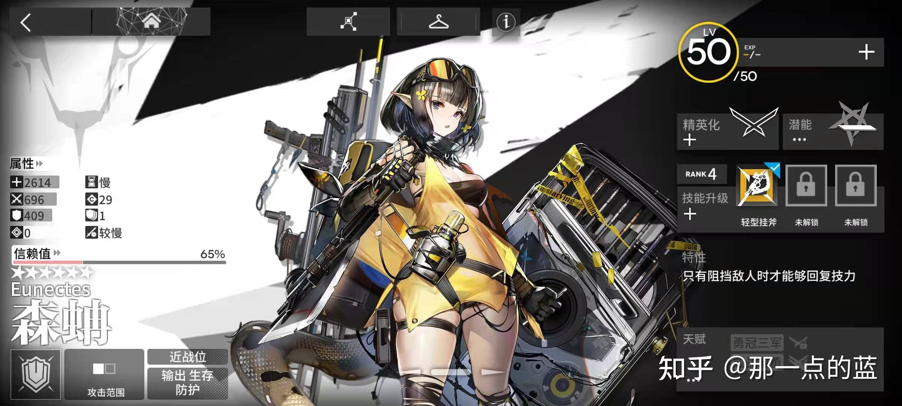

首页
重装干员
狙击干员
医疗干员
先锋干员
术士干员
辅助干员
近卫干员

重装干员
- 1.重装干员通常着拥有着较高的防御力和生命值，在游戏中负责阻挡敌人的进攻。
- 2.重装干员自身的输出通常不高，需要其他干员的协助才能打倒敌人。
- 3.重装干员大致可分为常规重装和奶盾两种类型，常规重装能够阻挡三名敌人，防御和血量都很高，数量较多；
- 4.奶盾的防御和血量都比同等星级的常规重装要低，但他们普遍拥有能够治疗友方干员的能力，目前数量较少。
- 5.重装干员是游戏的必备干员，前期建议练两名重装干员，可以是两个常规重装或者一常规一奶盾。